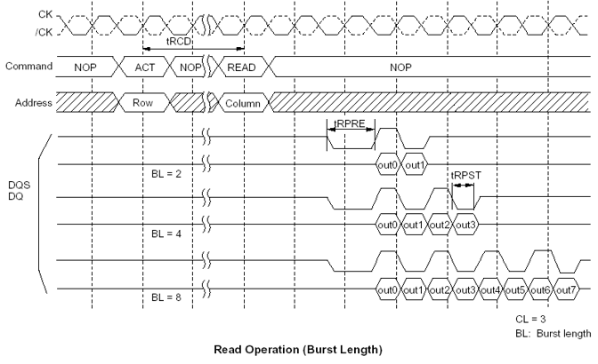

Defining memory test patterns for devices with a burst data mode
Many of the memory devices designed today use a burst mode on the data pins to maximize the transfer rate of the data. For these devices a single address is issued in the operation which generates a burst of data over multiple cycles. This is true for both a Write or Read operation. The Burst length is usually 2, 4 or 8 data cycles. As the data is bursted a device internal address automatically increments for each cycle. When reading from the device it is important to know this internal address if a failure occurs on one or more of the data cycles in the burst. Since this address is not available outside of the device the test system memory test solution must emulate the internal address sequence to determine the actual failing address. The memory test language provides the capability to define the internal sequence. A timing diagram for a memory device that uses a burst is shown in the figure below.
